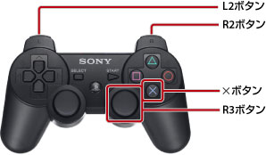

ユーザーズガイドの使いかた
このユーザーズガイドは、PS3™のシステムソフトウェアに関する操作方法などを説明しています。ハードウェアの取り扱いや、お使いになる上での注意事項などは、製品同梱の取扱説明書をご覧ください。
ユーザーズガイドを見るための推奨環境
このユーザーズガイドは、次の環境でご覧いただくことをお勧めします。
- お使いのブラウザーでJavaScript機能を無効にされている場合、正しく機能しなかったり表示されなかったりすることがあります。JavaScriptを有効にしてご覧ください。
- パソコンのWebブラウザは、Microsoft Internet Explorer 6.0以上をお使いいただくことをお勧めします。
PS3™でユーザーズガイドを見るための基本操作
PS3™の （インターネットブラウザー）でユーザーズガイドを見るときは、次の基本操作で見られます。
（インターネットブラウザー）でユーザーズガイドを見るときは、次の基本操作で見られます。
| 方向キー | リンクにポインターを移動する |
|---|---|
 ボタン ボタン |
リンク先を開く |
| 右スティック | 任意の方向にスクロールする |
| L1ボタン | 前のページに戻る |
次の操作で画面の表示を拡大することができます。

| R3ボタン（右スティック）を押す | 表示を拡大／解除する |
|---|---|
| 表示を拡大中にL2ボタン／R2ボタンを押す | 表示を拡大／縮小する |
表示を拡大中に ボタンを押す ボタンを押す |
表示の拡大を解除する |
ユーザーズガイドのボタン説明
PS3™では、地域や製品によって決定操作と取り消し操作に割り当てられたボタンが異なります。ユーザーズガイドでは、欧米言語では決定操作をボタン、取り消し操作をボタンと記載しています。それ以外の言語では決定操作をボタン、取り消し操作をボタンと記載しています。
ユーザーズガイドの印刷方法
パソコンを使って、ユーザーズガイドを印刷することができます。次の手順で印刷を行うと、複数のページをまとめて印刷できます。
1. |
Microsoft Windowsに搭載されているInternet Explorerを使って、ユーザーズガイドの［マニュアルインデックス］を表示する。 |
|---|---|
2. |
Internet Explorerの［ファイル］メニューから［印刷］を選ぶ。 |
3. |
［オプション］タブを選び、［リンク ドキュメントをすべて印刷する］をチェックして印刷する。 |